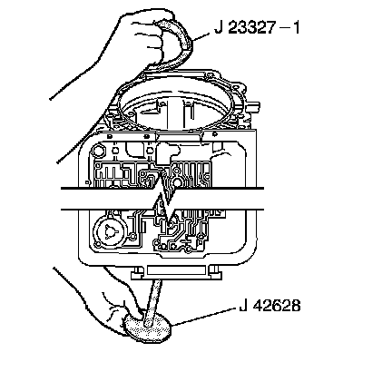
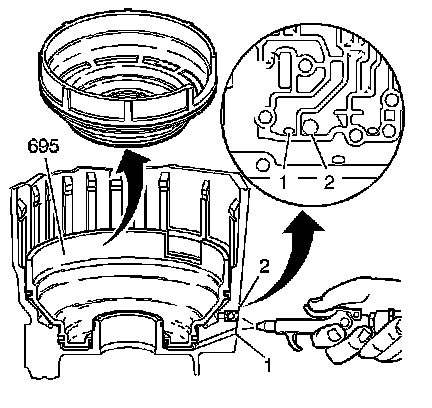

Low and Reverse Clutch Piston Removal
Low and Reverse Clutch Piston Removal
Tools Required
^ J 23327-1 Forward Clutch Spring Compressor (Bridge)
^ J 34627 Snap Ring Remover and Installer
^ J-42628 Plate

1. Install the J 23327-1 and the J-42628.

2. Tighten the J 23327-1.
3. Remove the low and reverse clutch retainer ring (693) using the J 34627.
4. Remove the low and reverse clutch spring assembly (694).

5. Blow compressed air into the case passage to remove the low and reverse clutch piston (695).
^ (1) LO Feed Passage
^ (2) REV Feed Passage